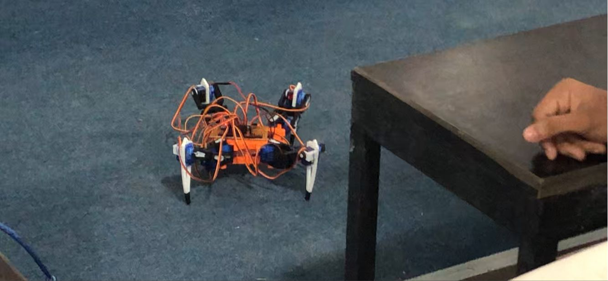

Four Legged Spider Robot (Team Project)
2023
We built a four-legged “spider” robot as our first Arduino project. We started from an open-source GitHub design and then customized it, tweaked the wiring, cleaned up the code, and adjusted the gait timing so it could walk and turn reliably. I focused on assembly and basic motion logic while teammates handled calibration and testing. The hardest parts were aligning the servos and keeping the frame rigid on a tiny student budget, but we got a stable crawl working and documented everything so others can repeat it. This project taught us microcontrollers, teamwork, and how to turn messy prototypes into something that actually moves.